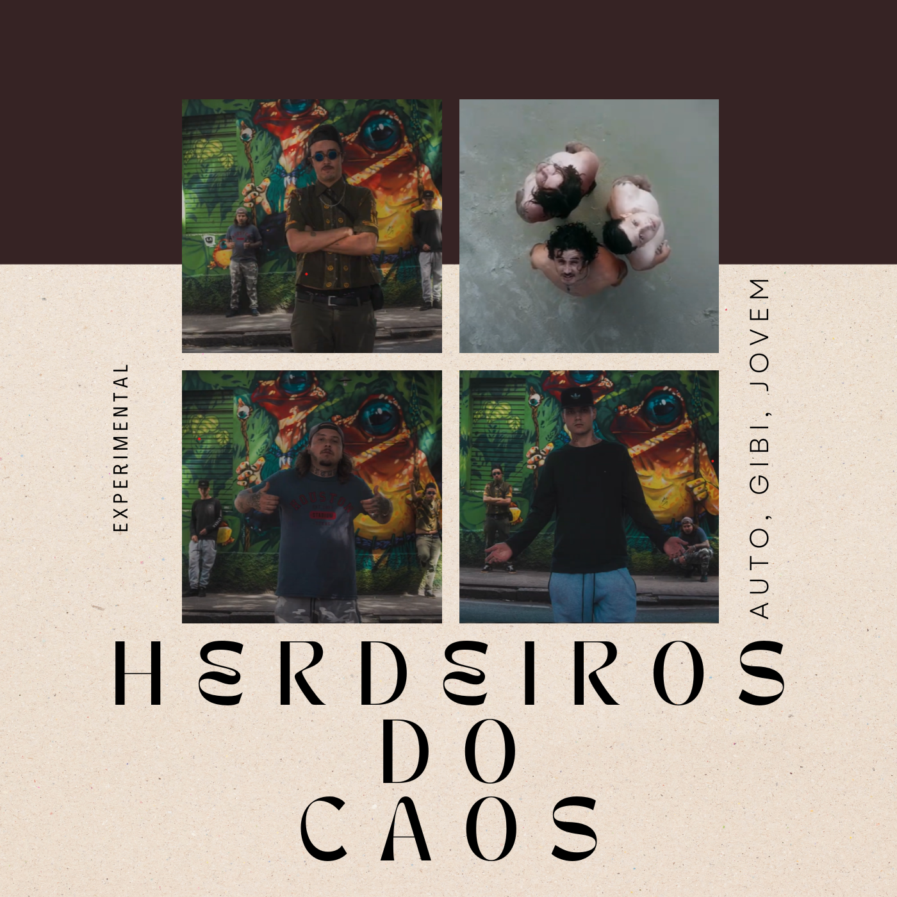
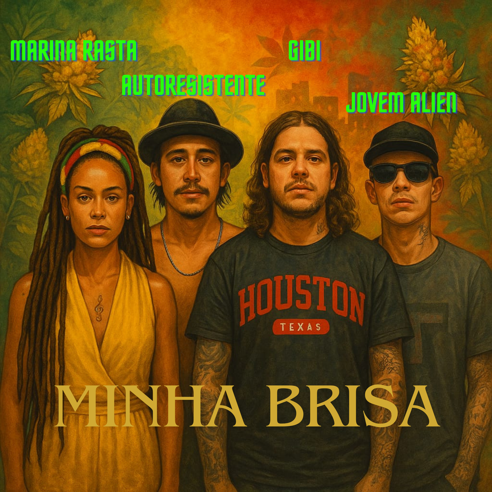
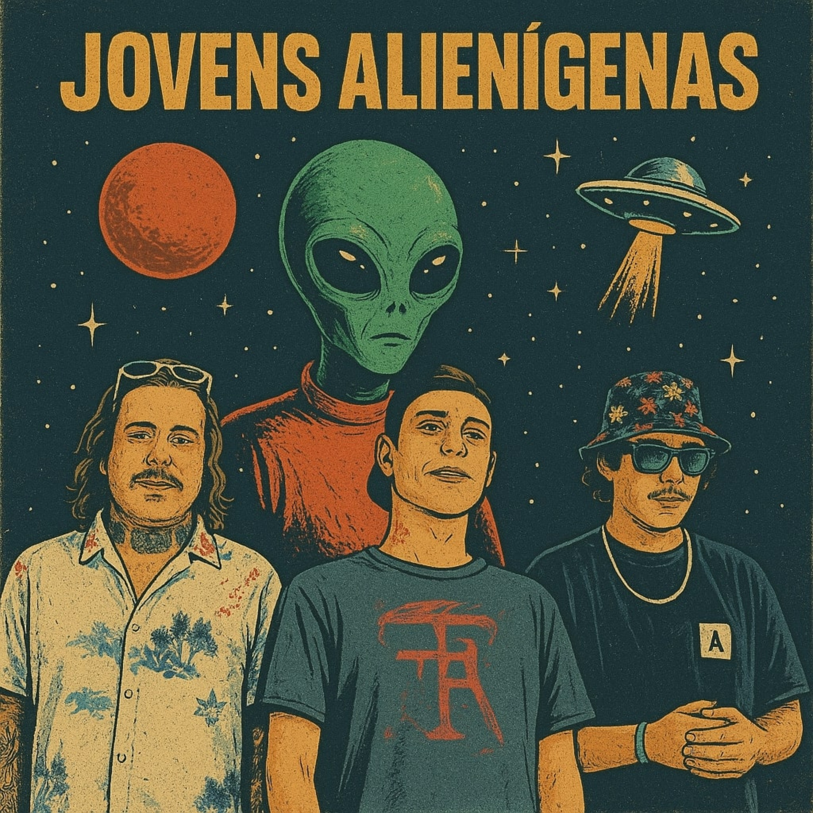
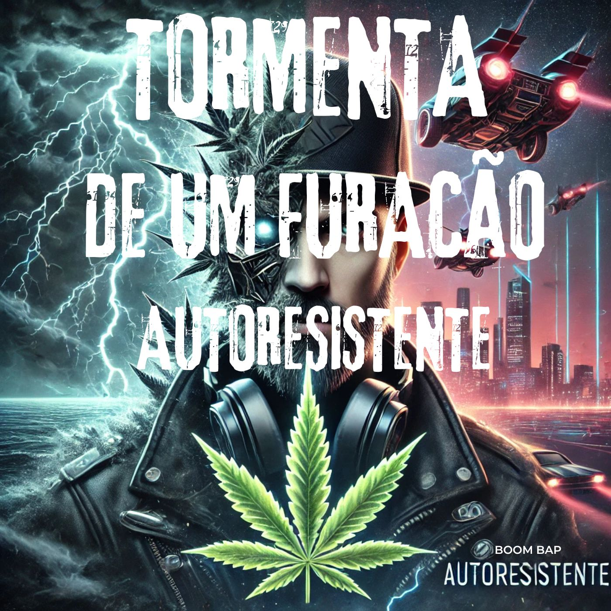

Experimental
Herdeiros do Caos
Tormenta, Gibi MC e Jovem Alien se reunem na ilha da magia, para captação da UmMonteProd.
Assistir agoraArtista independente · Florianópolis
Tormenta MC reúne rap, boom bap, trap, reggae, dub e elementos da cultura brasileira em um universo próprio. Música independente, identidade e muito som experimental.

Tormenta, Gibi MC e Jovem Alien se reunem na ilha da magia, para captação da UmMonteProd.
Assistir agora
Um reggae sobre liberdade e aquela sensação de encontrar paz no meio do caos.
Ouvir agora
Gibi MC se junta com TORMENTA MC e Jovem Alien para montar um álbum somente de TRAP.
Saiba mais
Somente boom-bap, sujeira e letras pesadas. 12 faixas, 5 feats e um videoclipe.
Saiba mais